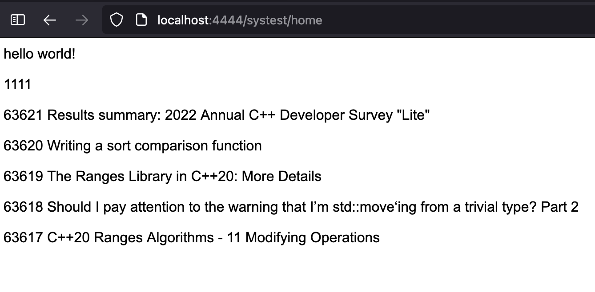

c++ web framework
This is a very modern c++ web framework that supports HTTP, ORM, and WebSockets services.
View docs »Example
#include "orm.h"
#include <chrono>
#include <thread>
namespace http {
std::string home(clientpeer& client){
client<<"<p>hello world!</p>";
client<<"<p>";
client<<client.session["userid"]<<"</p>";
orm::sms::News comnews;
comnews.where("newsid>",1000).order("newsid DESC").limit(5).fetch();
if(comnews.size()>0){
for(auto &bb:comnews){
client<<"<p>"<<bb.newsid<<" "<<bb.newtitle<<"</p>";
}
}
return "";
}
}
Notes
home is the registered callback function,
code in the controller/systest.hpp file
Registration point in common/reghttpmethod.hpp file,
_inithttpmethodregto function add one line
methodcallback.emplace("systest/home",home);"systest/home" is URL path
Output
